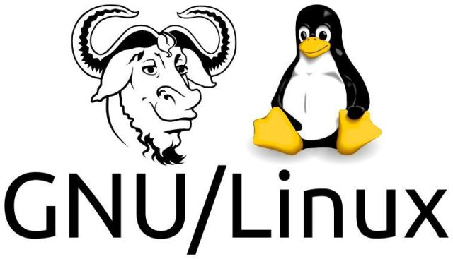
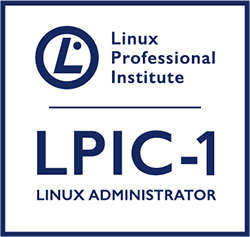
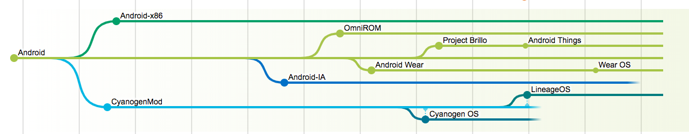
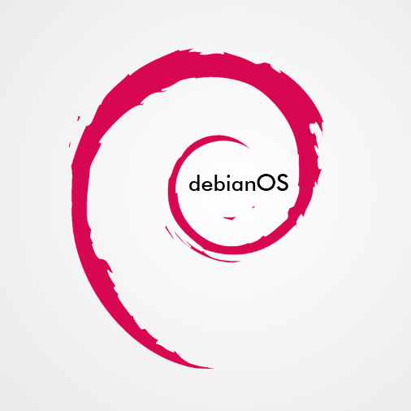

LPIC-1
https://www.synergia-corsi.ithttps://magni.me
Linux
Linux è una famiglia di sistemi operativi di tipo Unix-like, pubblicati sotto varie possibili distribuzioni, aventi la caratteristica comune di utilizzare come nucleo il kernel Linux.(wikipedia)
Un po' di storia
Richard M. Stallman
È uno dei principali esponenti del movimento del software libero. Nel settembre del 1983 diede avvio al progetto GNU con l'intento di creare un sistema operativo simile a Unix, ma composto interamente da software libero: da ciò prese vita il movimento del software libero. Nell'ottobre del 1985 fondò la Free Software Foundation (FSF). Pioniere del concetto di copyleft, nel 1989 creò la GNU General Public License, una delle licenze libere più diffuse.
GNU
GNU (acronimo ricorsivo di "GNU's Not Unix") è un sistema operativo Unix-like, ideato nel 1984 da Richard Stallman e promosso dalla Free Software Foundation, allo scopo di ottenere un sistema operativo completo utilizzando esclusivamente software libero
Gli manca però un componente fondamentale
Kernel
Il kernel costituisce il nucleo fondamentale di un sistema operativo ovvero il software avente il compito di fornire ai processi in esecuzione sul computer un accesso sicuro e controllato all'hardware.
Linus Torvalds
Linus Benedict Torvalds è stato l'iniziatore dello sviluppo del kernel Linux, di cui è pure ispiratore del nome.
Linux è stato ideato e creato da Linus Torvalds nell’agosto 1991, quando era un giovane studente finlandese appassionato di programmazione che, spinto dalla curiosità e dalla voglia di divertirsi sperimentando, ha cercato di creare un sistema operativo compatibile con le architetture informatiche diffuse in quel periodo.
Linux era ispirato a Minix, un sistema operativo simile a Unix, che poteva essere eseguito su di un comune personal computer. Tale sistema operativo veniva distribuito con il codice sorgente, ma la sua licenza di distribuzione vietava di apportare modifiche al codice senza l'autorizzazione dell'autore. (wikipedia)
Linux era ispirato a Minix, un sistema operativo simile a Unix, che poteva essere eseguito su di un comune personal computer. Tale sistema operativo veniva distribuito con il codice sorgente, ma la sua licenza di distribuzione vietava di apportare modifiche al codice senza l'autorizzazione dell'autore. (wikipedia)
GNU/Linux
Giving the Linus Torvalds Award to the Free Software Foundation is a bit like giving the Han Solo Award to the Rebel Alliance.
Debian GNU/Hurd
pubblicato nel 2015
Lpi
LPI è un'organizzazione non profit
LPI è lo standard di certificazione globale e l'organizzazione di supporto alla carriera per professionisti Open Source.
Il suo scopo è di offrire opportunità economiche e creative per tutti, rendendo la conoscenza e la certificazione delle competenze Open Source universalmente accessibili.
LPI è un'organizzazione non profit LPI è lo standard di certificazione globale e l'organizzazione di supporto alla carriera per professionisti Open Source. Con più di 600,000 esami soministrati, è il primo e il più grande ente di certificazione Open Source e Linux al mondo.
LPI ha certificato professionisti in più di paesi 180, offre esami in 9 lingue e ha centinaia di partner di formazione in tutto il mondo.
Certificazioni
- LPI Linux Essentials
- Linux Professional Institute DevOps Tools Engineer
- Amministratore Linux certificato LPIC-1
- Ingegnere Linux certificato LPIC-2
- LPIC-3 300: Linux Enterprise Professional - Ambiente misto
- LPIC-3 303: Linux Enterprise Professional - XNUMX Sicurezza
LPI Linux Essentials
Possibilità di utilizzare l'editor di riga di console di base e dimostrare una comprensione di processi, programmi e componenti del sistema operativo Linux.
LPI Linux Essentials - Esame
Superare l'esame LPI 010; Domande 40 a scelta multipla in minuti 60.
Amministratore Linux certificato LPIC-1
Possibilità di eseguire attività di manutenzione con la riga di comando, installare e configurare un computer che esegue Linux ed essere in grado di configurare il networking di base.
Amministratore Linux certificato LPIC-1 - Esame
Superare gli esami LPI 101 e 102; ogni esame è 60 a scelta multipla e domande di compilazione in bianco nei minuti 90.
Ingegnere Linux certificato LPIC-2
Possibilità di amministrare reti miste di piccole e medie dimensioni.
Ingegnere Linux certificato LPIC-2 - Esame
Superare gli esami LPI 201 e 202; ogni esame è 60 a scelta multipla e domande di compilazione in bianco nei minuti 90. Deve inoltre avere la certificazione LPIC-1 attiva.
LPIC-1:
LPIC-1 è la prima certificazione del programma di certificazione professionale Linux multilivello di LPI. LPIC-1 convaliderà la capacità del candidato di eseguire attività di manutenzione sulla command line, installare e configurare un computer con Linux e configurare le reti di base.
https://www.lpi.org/it/our-certifications/lpic-1-overviewPer ottenere la certificazione LPIC-1, il candidato deve essere in grado di:
- capire l'architettura di un sistema Linux;
- installare e mantenere una workstation Linux, incluso X11 e configurarlo come client di rete;
- lavorare sulla command line di Linux, compresi i comuni comandi GNU e Unix;
- gestire i file e le autorizzazioni di accesso e la sicurezza del sistema;
- eseguire semplici attività di manutenzione: aiutare gli utenti, aggiungere utenti a un sistema più grande, eseguire il backup e il ripristino, spegnere e riavviare.
101
https://www.lpi.org/it/our-certifications/exam-101-objectives- Topic 101: System Architecture
- 101.1 Determine and configure hardware settings
- 101.2 Boot the system
- 101.3 Change runlevels / boot targets and shutdown or reboot system
- Topic 102: Linux Installation and Package Management
- 102.1 Design hard disk layout
- 102.2 Install a boot manager
- 102.4/5 Use package management
- 102.6 Linux as a virtualization guest
- Topic 103: GNU and Unix Commands
- Topic 104: Devices, Linux Filesystems, Filesystem Hierarchy Standard
- 104.1 Create partitions and filesystems
- 104.5 Manage file permissions and ownership
- 104.7 Find system files and place files in the correct location
102
http://www.lpi.org/it/our-certifications/exam-102-objectives- Topic 105: Shells and Shell Scripting
- 105.1 Customize and use the shell environment
- 105.2 Customize or write simple scripts
- Topic 106: User Interfaces and Desktops
- Topic 107: Administrative Tasks
- 107.1 Manage user and group accounts and related system files
- 107.2 Automate system administration tasks by scheduling jobs
- Topic 108: Essential System Services
- 108.1 Maintain system time
- 108.2 System logging
- 108.3 Mail Transfer Agent (MTA) basics
- 108.4 Manage printers and printing
- Topic 109: Networking Fundamentals
- 109.1 Fundamentals of internet protocols
- 109.2 Persistent network configuration
- Topic 110: Security
- 110.1 Perform security administration tasks

Distribuzioni
- Debian
- Red Hat
- Slackware
- Suse
- Ubuntu
Android
Debian
https://www.debian.org
Fedora
https://getfedora.org